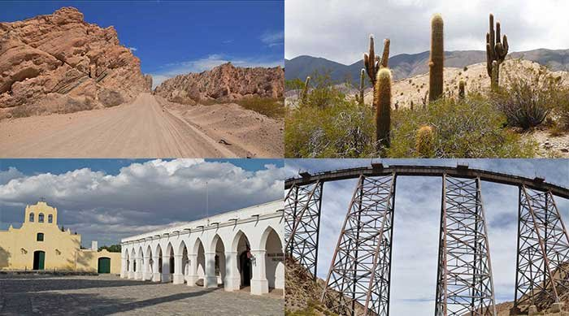

Salta Turismo. Información de viaje
Sitio con información turística de la provincia de Salta. Guía de viajes y turismo, lugares para visitar, excursiones, alojamiento, paseos, pueblos y mucho más.

Salta es un destino ideal para tu viaje de descanso o vacaciones. Pueblos y paisajes únicos te van a sorprender en la provincia de Salta.
Salta, un lindo viaje
Salta te espera para que descubras sus paisajes, historias, colores, sabores y la hospitalidad de los salteños. Bienvenido al sitio de viaje con información turística, destinos, excursiones, paseos, lugares para visitar.
Una provincia, miles de paisajes
La provincia de Salta posee una variedad de paisajes que asombra a todos los visitantes. Diferentes circuitos y recorridos permiten descubrir desde las selvas subtropicales con una biodiversidad única, el chaco salteño con sus montes inexplorados, los amplios valles de producción agrícola, los coloridos cerros, algunos superan los 6.000 metros de altura (Volcán Llullaillaco 6739 msnm), y la impresionante puna. La ciudad capital con edificios coloniales, museos, iglesias y mercados y también el interior con pueblos tranquilos y hospitalarios. El Tren de las Nubes que es una obra de ingeniería famosa en todo el mundo. La gastronomía de platos regionales y reconocidos vinos locales. Por todo esto y mucho más el destino de tu próximo viaje es Salta.
La provincia de Salta tiene una superficie de 155.488 km². Es una de las provincias más extensas de Argentina. Un lugar para viajar y disfrutar de todos sus atractivos turísticos.